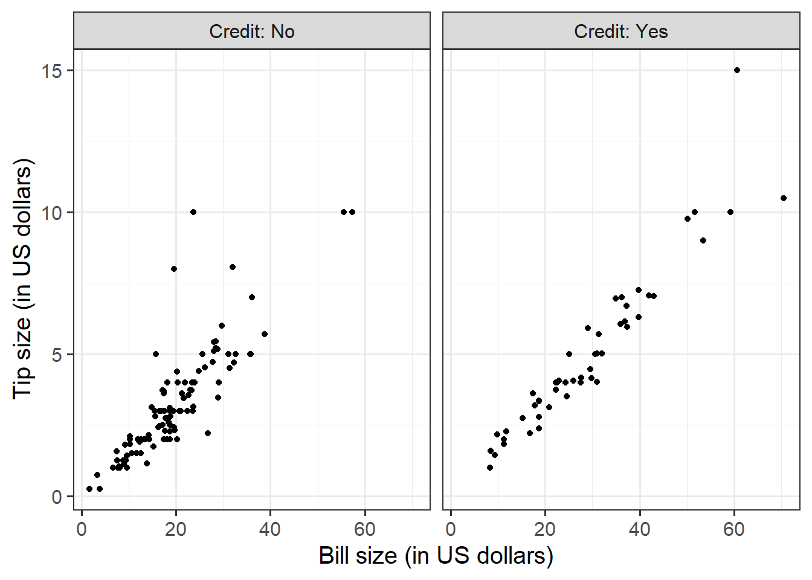
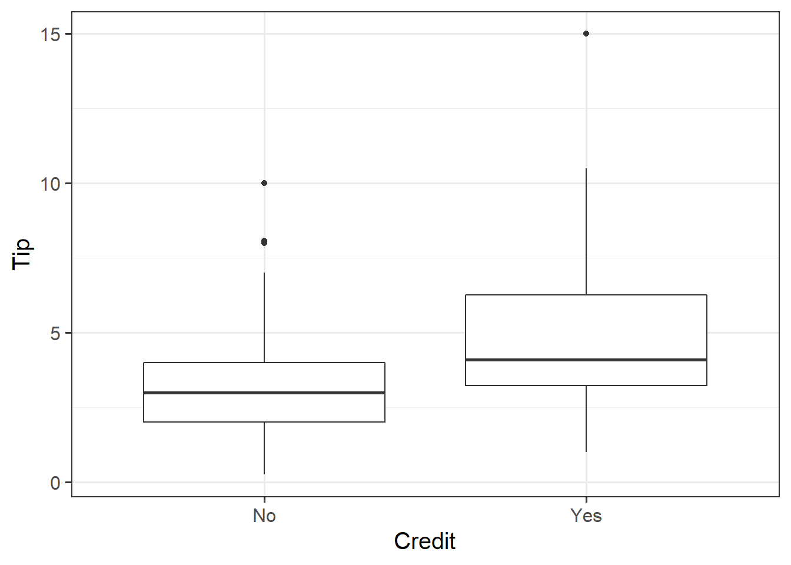

| Variable Name | Description |
|---|---|
| Bill | Size of the bill (in dollars) |
| Tip | Size of the tip (in dollars) |
| Credit | Paid with a credit card? n or y |
| Guests | Number of people in the group |
| Day | Day of the week: m=Monday, t=Tuesday, w=Wednesday, th=Thursday, or f=Friday |
| Server | Code for specific waiter/waitress: A, B, or C |
| PctTip | Tip as a percentage of the bill |
Relationships
Semester 1 - Week 4
Formative report A
In the first five weeks of the course your group should produce a PDF report using Rmarkdown, to be submitted at the end of week 5. You will receive formative feedback on your submission during the labs of week 6.
The submitted report should be a PDF file of 4 pages at most. In week 5, you can add an Appendix in which you will collate all the R code in a chunk with the setting results = 'hide', which does not count towards the page limit.
The report should not include any reference to R code or functions, but be written for a generic reader who is only assumed to have a basic statistical understanding without any R knowledge. You should also avoid any R code output or printout in the PDF file.
Next week: Submission of Formative report A
Your group must submit one PDF file for formative report A by 12 noon on Friday 21 October 2022 (next week).
To submit go to the course Learn page, click “Assessment” from the left-hand side menu, then click “Report submission”, and then “Submit Formative Report A here”.
No extensions. As mentioned on the Course Information page, there will be no extensions allowed for group-based reports.
Data
For formative report A, please only focus on the variables Movie to Year, ignoring anything beyond that. In other words, do not analyse the variables IQ1 to PrivateTransport in the next five weeks of the course, we will use those later in the course.
Hollywood Movies. At the link https://uoepsy.github.io/data/hollywood_movies_subset.csv you will find data on Hollywood movies released between 2012 and 2018 from the top 5 lead studios and top 10 genres. The following variables were recorded:
-
Movie: Title of the movie -
LeadStudio: Primary U.S. distributor of the movie -
RottenTomatoes: Rotten Tomatoes rating (critics) -
AudienceScore: Audience rating (via Rotten Tomatoes) -
Genre: One of Action Adventure, Black Comedy, Comedy, Concert, Documentary, Drama, Horror, Musical, Romantic Comedy, Thriller, or Western -
TheatersOpenWeek: Number of screens for opening weekend -
OpeningWeekend: Opening weekend gross (in millions) -
BOAvgOpenWeekend: Average box office income per theater, opening weekend -
Budget: Production budget (in millions) -
DomesticGross: Gross income for domestic (U.S.) viewers (in millions) -
WorldGross: Gross income for all viewers (in millions) -
ForeignGross: Gross income for foreign viewers (in millions) -
Profitability: WorldGross as a percentage of Budget -
OpenProfit: Percentage of budget recovered on opening weekend -
Year: Year the movie was released - (Ignore for now)
IQ1-IQ50: IQ score of each of 50 audience raters - (Ignore for now)
Snacks: How many of the 50 audience raters brought snacks - (Ignore for now)
PrivateTransport: How many of the 50 audience raters reached the cinema via private transportation
1 Tasks
For formative report A, you will be asked to perform the following tasks, each related to a week of teaching in this course.
This week you will only focus on task A4. In the next section you will find some guided sub-steps you may want to consider to complete task A4.
A1) Read the data into R, inspect it, and write a concise introduction to the data and its structure
A2) Display and describe the categorical variables
A3) Display and describe six numerical variables of your choice
This week’s task
A4) Display and describe a relationship of interest between two or three variables of your choice
A5) Finish the report write-up, knit to PDF, and submit the PDF for formative feedback
2 A4 sub-tasks
In this section you will find some guided sub-steps you may want to consider to complete task A4.
Reopen last week’s Rmd file, as you will continue last week’s work and build on it.1
Choose two variables and create a plot displaying their relationship.2
- Summarise the relationship with either a table or a number, depending on the type of the variables.3
-
Choose a third variable and visualise how the relationship above varies across the third variable.
- If you have chosen a categorical-numeric relationship, choose a categorical variable for the third variable
- If you have chosen a numeric-numeric relationship, choose a categorical variable for the third variable
- If you have chosen a categorical-categorical relationship, choose a numeric variable for the third variable and invert the order of one categorical variable with the numeric one
- If you have chosen a categorical-numeric relationship, choose a categorical variable for the third variable
Summarise with table how the relationship above varies across the third variable.4
-
Organise your report to have three sections:
- Introduction: where you write a concise introduction to the data for a generic reader
- Analysis: where you present all your tables and plots
- Discussion: where you write take-home messages about the data and the insights you discovered
Knit the report to PDF, making sure that only text, tables, and plots are visible. Hide the R code chunks so that no R code is visible.
Hiding R code or ouput
To not show the code of an R code chunk, and only show the output, write:
```{r, echo=FALSE}
# code goes here
```To show the code of an R code chunk, but hide the output, write:
```{r, results='hide'}
# code goes here
```To hide both code and output of an R code chunk, write:
```{r, include=FALSE}
# code goes here
```3 Worked example
Consider the dataset available at https://uoepsy.github.io/data/RestaurantTips.csv, containing 157 observations on the following 7 variables:
These data were collected by the owner of a bistro in the US, who was interested in understanding the tipping patterns of their customers. The data are adapted from Lock et al. (2020).
# A tibble: 6 × 7
Bill Tip Credit Guests Day Server PctTip
<dbl> <dbl> <chr> <dbl> <chr> <chr> <dbl>
1 23.7 10 n 2 f A 42.2
2 36.1 7 n 3 f B 19.4
3 32.0 5.01 y 2 f A 15.7
4 17.4 3.61 y 2 f B 20.8
5 15.4 3 n 2 f B 19.5
6 18.6 2.5 n 2 f A 13.4We can replace each factor level with a clearer label:
The percentage of total bill has a maximum value of 221, which seems very strange. Someone is very unlikely to tip more than their bill total. In this case 221% of their bill value seems unlikely.
Let’s inspect the row where PctTip is greater than 100:
# A tibble: 1 × 7
Bill Tip Credit Guests Day Server PctTip
<dbl> <dbl> <fct> <dbl> <fct> <fct> <dbl>
1 49.6 NA Yes 4 Thursday C 221With a bill of 49.59, the tip would be 109.59 dollars:
49.59 * 221 / 100[1] 109.5939Furthermore, we also notice that the tipping amount is not available (NA). The corresponding value in the percentage of total tip seems likely an inputting error, perhaps due to double typing the leading 2 when recording the data. We will set that value to not available (NA) with the following code:
tips$PctTip[tips$PctTip > 100] <- NAConsider, for example, the relationship between bill and tip size. As these are two numerical variables, we visualise the relationship with a scatterplot:
ggplot(tips, aes(x = Bill, y = Tip)) +
geom_point() +
labs(x = "Bill size (in US dollars)",
y = "Tip size (in US dollars)")
The code above first sets up a blank canvas for plotting the dataset tip, and placing on the x axis the variable Bill and on the y axis the variable Tip:
ggplot(tips, aes(x = Bill, y = Tip))The following line adds a geometric shape to the plot, in this case points:
geom_point()The final line uses more informative labels for the reader, setting a label for the x and y axis respectively:
labs(x = "Bill size (in US dollars)",
y = "Tip size (in US dollars)")The layers of the plot need to be added to each other with a + symbol at the end of each line, excluding the last one.
We can numerically summarise this relationship with the covariance between the two variables:
cov(tips$Bill, tips$Tip)[1] NAThere are missing values, so the covariance cannot be computed. To fix this, we use the option use = "pairwise.complete.obs" to tell R to only keep the complete pairs to compute the covariance, i.e. ignoring pairs where at least one number is NA:
To investigate the relationship between bill and tip size for those who paid by credit card and those who didn’t we can create faceted scatterplots:
ggplot(tips, aes(x = Bill, y = Tip)) +
geom_point() +
labs(x = "Bill size (in US dollars)",
y = "Tip size (in US dollars)") +
facet_wrap(~Credit)
We can improve the labelling by using labeller = "label_both", which displays not only the group value as label, but both the variable and value:
ggplot(tips, aes(x = Bill, y = Tip)) +
geom_point() +
labs(x = "Bill size (in US dollars)",
y = "Tip size (in US dollars)") +
facet_wrap(~Credit, labeller = "label_both")
Similarly, you can compute grouped covariances via:
| Credit | COV |
|---|---|
| No | 15.38 |
| Yes | 37.68 |
Example write-up
Figure 1 highlights a strong positive relationship between bill and tip size (in US dollars). The covariance between the two variables is 25.96 squared dollars. The relationship between bill and tip size is stronger for those who paid by credit card than those who did not, as highlighted by Figure 2 and Table 1, where the covariance between the two variables is 37.68 for those that used a credit card and 15.38 for those that did not.
Relationships between variables
Visualise with a mosaic plot:
Summarise with a contingency table:
| A | B | C | |
|---|---|---|---|
| No | 39 | 50 | 17 |
| Yes | 21 | 15 | 15 |
Boxplot
ggplot(tips, aes(x = Credit, y = Tip)) +
geom_boxplot()
or grouped histogram
ggplot(tips, aes(x = Tip)) +
geom_histogram(color='white') +
facet_wrap(~Credit)
Summarise via a grouped table of descriptive statistics:
| Credit | N | M | SD |
|---|---|---|---|
| No | 106 | 3.25 | 1.93 |
| Yes | 50 | 4.99 | 2.77 |
4 Student Glossary
To conclude the lab, add the new functions to the glossary of R functions that you started last week.
| Function | Use and package |
|---|---|
geom_histogram |
? |
geom_density |
? |
geom_boxplot |
? |
geom_point |
? |
geom_mosaic |
? |
facet_wrap |
? |
group_by |
? |
summarise |
? |
cor |
? |
round |
? |
References
Lock, Robin H, Patti Frazer Lock, Kari Lock Morgan, Eric F Lock, and Dennis F Lock. 2020. Statistics: Unlocking the Power of Data. John Wiley & Sons.
Footnotes
Hint: ask last week’s driver for the Rmd file, they should share it with the group via email or Teams.
To download the file from the server, go to the RStudio Files pane, tick the box next to the Rmd file, and select More > Export.↩︎-
Hint:
- Categorical-Categorical:
geom_mosaic()fromggmosaicpackage, orgeom_bar()
- Categorical-Numeric:
geom_histogram()andfacet_wrap(),geom_density()andfacet_wrap(), orgeom_boxplot()
- Numeric-Numeric:
geom_point()
- Categorical-Categorical:
-
Hint:
Depending on the type of the variables some of these functions may be useful:
count(),table(),n(),mean(),sd(),cov()If the result is NA, what could have caused that?
For some functions, this is solved by adding the argument
na.rm = TRUE.For
cov()you need the argumentuse = "pairwise.complete.obs". This is because the covariance between a pair of variables \(X, Y\) cannot be computed if one or both the values in a product is NA. The argument above tells R to only use pairs with complete observations, i.e. no missing values.
Hint: you may want to use functions such as
count,table,summarise,n,mean,sd,cov,group_by↩︎